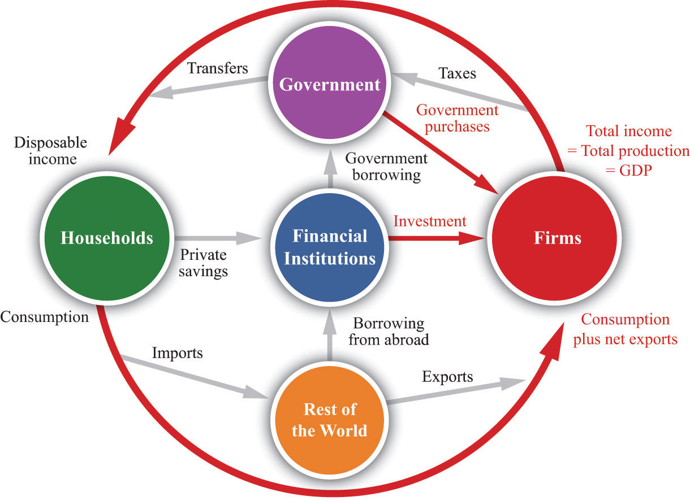

After you have read this section, you should be able to answer the following questions:
In his analysis of the Great Depression, John Maynard Keynes contrasted his new approach with the prevailing “classical” theory:John Maynard Keynes, The General Theory of Employment, Interest and Money (Orlando: First Harvest/Harcourt, 1964[1936]), 3. “I shall argue that the postulates of the classical theory are applicable to a special case only and not to the general case.…Moreover, the characteristics of the special case assumed by the classical theory happen not to be those of the economic society in which we actually live, with the result that its teaching is misleading and disastrous if we attempt to apply it to the facts of experience.” Keynes claimed that there was a fundamental failure in the economic system that prevented markets from fully coordinating activities in the economy. He argued that, as a consequence, the actual output of the economy was not determined by the productive capacity of the economy, and that it was “misleading and disastrous” to think otherwise. In more modern terms, he said that actual output need not always equal potential output but was instead determined by the overall level of spending or demand in the economy.
Keynes provided a competing story of the Great Depression that did not rely on technological regress and in which unemployment truly reflected an inability of households to find work. Keynes gave life to aggregate spendingThe total amount of spending by households, firms, and the government on the goods and services that go into real GDP.—the total spending by households, firms, and governments—as a determinant of aggregate gross domestic product (GDP). With this new perspective, Keynes also uncovered a way in which government intervention might help the functioning of the economy.
To understand how Keynes approached the puzzle of the Great Depression, we must first look more closely at the components of GDP. Figure 22.5 "The Firm Sector in the Circular Flow" shows the circular flow, emphasizing the flows in and out of the firm sector of the economy. Accounting rules tell us that in every sector of the circular flow, the flow of dollars in must equal the flow of dollars out. We know that the total flow of dollars from the firm sector measures the total value of production in the economy. The total flow of dollars into the firm sector equals total expenditures on GDP. The figure therefore illustrates a fundamental relationship in the national accounts.
Figure 22.5 The Firm Sector in the Circular Flow
The flow of dollars into the firm sector equals consumption plus net exports plus investment plus government purchases. The flow of dollars from the firm sector equals total GDP in the economy.
The national income identityProduction equals the sum of consumption plus investment plus government purchases plus net exports. states that
production = consumption + investment + government purchases + net exports.Toolkit: Section 31.27 "The Circular Flow of Income"
The toolkit describes the circular flow of income in more detail.
ConsumptionThe total spending by households on final goods and services. refers to total consumption spending by households on final goods and services. Consumption is divided into three categories.
The distinctions among these categories are not always as clear-cut as the definitions suggest. A good pair of blue jeans might outlast a shoddy dishwasher, even though the jeans are classified as a nondurable good and the dishwasher as a durable good.
InvestmentThe purchase of new goods that increase capital stock, allowing an economy to produce more output in the future. is the purchase of new goods that increase the capital stock, allowing us to produce more output in the future. Investment is divided into three categories.
The economist’s definition of investment is precise and differs from the way we often use the word in everyday speech. Specifically, economists do not use the term to mean the purchase of financial assets, such as stocks and bonds. Most of the time when we talk about investment in this book, we are referring to business fixed investment—the production of new physical capital goods. Inventory investment is a special category of investment that we explain in Section 22.3.2 "Inventory Investment".
As a rough rule of thumb, consumption spending is carried out by households, and investment spending is carried out by firms. But there is one important exception: new residential construction is included in investment. A new house purchased by a household is treated as investment, not consumption.
Government purchasesSpending by the government on goods and services. include all purchases of goods and services by the government. We include in our definition of “government” local as well as national government activity. In the United States, this means that we collapse together federal, state, and local governments for the purpose of our analysis.
This component of spending refers only to purchases of goods and services, not to transfersA cash payment from the government to individuals and firms.. So, if the federal government buys aircraft from Boeing or the local police department buys a fleet of Volvos, these are included in government purchases. However, a transfer you receive from the government—say, because you are unemployed and are being paid unemployment insurance—is not counted in GDP. (Of course, if you then use this income to purchase goods and services, that consumption is part of GDP.)
Net exportsExports minus imports. simply equal exports minus imports. They are included because we must correct for the expenditure flows associated with the rest of the world. Some spending in the economy goes to imported goods, which is not associated with domestic production. We must subtract these imports from total expenditures. Against that, some demand for domestically produced goods comes from other countries. We add these exports to total expenditure.
Inventory investment is a relatively minor component of GDP, but we need to understand it in some detail because it plays a key role in the Keynesian approach. When a firm produces output, it does one of two things with it: it either sells it or adds it to inventory. Thus an accounting relationship within a firm is that
production = sales + changes in inventory.If a firm produces more than it sells, its stocks of inventories increase. If a firm sells more than it produces, its stocks of inventories decrease. The inventories that a firm holds are counted as part of its capital stock, so any change in firms’ inventories is counted as a component of investment.
Suppose General Motors (GM) produces 10 million cars, anticipating that it will sell them all. Then imagine that demand is lower than expected, so it only sells 9.9 million. The result is that 100,000 cars pile up on GM’s lots, and the GM accountants record this as an addition to inventory. We want GDP to measure both production and spending, but we have 100,000 cars that have been produced but not purchased. The national income accounts get around this problem by effectively pretending that GM bought the cars from itself.
If the cars are then sold in the following year, they will not contribute to GDP in that year—quite properly, since they were not produced that year. The national accounts in the next year will show that 100,000 cars were sold to households, but they will also show that inventories decreased by 100,000 cars. Thus the accounts record expenditures on these cars as part of durable goods consumption, but the accounts also contain an offsetting reduction in inventory investment.
In some cases, firms change their stocks of inventory as a part of their business strategy. More often, changes in inventories occur because a firm did not correctly forecast its sales. Unplanned inventory investmentAn increase in inventories that comes about because firms have sold less than they anticipated. is an increase in inventories that comes about because a firm sells less than it anticipated. Because GM expected to sell all 10 million cars but sold only 9.9 million, GM had 100,000 cars of unplanned inventory investment.
Moreover, GM is likely to react swiftly to this imbalance between its production plans and its sales. When it sees its sales decrease and its inventory increase, it will respond by cutting its production back until it is in line with sales again. Thus, when an individual firm sees inventories increase and sales decrease, it typically scales down production to match the decrease in demand.
Now let us think about how this works at the level of an economy as a whole. Suppose we divide total spending in the economy into unplanned inventory investment and everything else, which we call planned spendingAll expenditures in an economy except for unplanned inventory investment..
Toolkit: Section 31.30 "The Aggregate Expenditure Model"
Planned spending is all expenditure in the economy except for unplanned inventory investment:
GDP = planned spending + unplanned inventory investment.This equation must always hold true because of the rules of national income accounting.
Begin with the situation where there is no unplanned inventory investment—so GDP equals planned spending—and then suppose that planned spending decreases. Firms find that their production is in excess of their sales, so their inventory builds up. As we just argued, they respond by decreasing production so that GDP is again equal to planned spending, and unplanned inventory investment is once again zero. Thus, even though unplanned inventory investment can be nonzero for very short periods of time, we do not expect such a situation to persist. We expect instead that actual output will, in fact, almost always equal planned spending.
Now let us look at how these components of GDP behaved during the 1930s. Table 22.3 "Growth Rates of Key Macroeconomic Variables, 1930–39*" presents these data in the form of growth rates. Remember that a positive growth rate means the variable in question increased from one year to the next, while a negative growth rate means it decreased.
Table 22.3 Growth Rates of Key Macroeconomic Variables, 1930–39*
| Growth Rates | 1930 | 1931 | 1932 | 1933 | 1934 | 1935 | 1936 | 1937 | 1938 | 1939 |
|---|---|---|---|---|---|---|---|---|---|---|
| Real GDP | −8.6 | −6.4 | −13.0 | −1.3 | 10.8 | 8.9 | 13.0 | 5.1 | −3.4 | 8.1 |
| Consumption | −5.3 | −3.1 | −8.9 | −2.2 | 7.1 | 6.1 | 10.1 | 3.7 | −1.6 | 5.6 |
| Investment | −33.3 | −37.2 | −69.8 | 47.5 | 80.5 | 85.1 | 28.2 | 24.9 | −33.9 | 28.6 |
| Government Purchases | 10.2 | 4.2 | −3.3 | −3.5 | 12.8 | 2.7 | 16.7 | −4.2 | 7.7 | 8.8 |
| *This table shows growth rates in real GDP, consumption, investment, and government purchases. All data are from the National Income and Product Accounts web page, Bureau of Economic Analysis, Department of Commerce (http://www.bea.gov/national/nipaweb/index.asp). | ||||||||||
We see again that real GDP decreased for four years in succession (the growth rates are negative from 1930 to 1933). The decrease in real GDP was accompanied by a decline in consumption and investment: consumption likewise decreased for four successive years, and investment decreased for three successive years. The decline in consumption was not as steep as the decline in real GDP, while the decline in investment was much larger. Were we to drill deeper and look at the components of consumption, we would discover that expenditures on durable goods decreased by 17.6 percent in 1930 and 25.1 percent in 1932, while expenditures on services decreased by only 2.5 percent in 1930 and 6.3 percent in 1932.
Whatever was happening during this period evidently had a much larger influence on firms’ purchases of investment goods, and on households’ spending on cars and other durable goods, than it did on purchases of nondurable goods (such as food) and services (such as haircuts). A similar pattern can be observed in modern economies: consumption is smoother than output, and spending on services is smoother than spending on durables. The reason for this is a phenomenon that economists call consumption smoothingThe idea that households like to keep their flow of consumption relatively steady over time, smoothing over income changes..
Toolkit: Section 31.34 "The Life-Cycle Model of Consumption"
Consumption smoothing is the idea that households like to keep their flow of consumption relatively steady over time. When income is unusually high, the household saves (or pays off existing loans); when income is unusually low, the household borrows (or draws down existing savings). Consumption smoothing is a key ingredient of the life-cycle model of consumption, which is discussed in more detail in the toolkit.
If your company has a good year and you get a big bonus, you will increase consumption spending not only this year but also in future years. To do so, you must save a portion of your bonus to pay for this higher consumption in the future. By the same logic, if your income decreases, your consumption will not decrease as much. People who became unemployed during the Great Depression did not reduce their consumption of services and nondurable goods to zero. Instead, as far as was possible, they drew on their existing savings, borrowed, and postponed purchases of durable goods.
Consumption of durable goods, in other words, resembles investment rather than consumption of nondurable goods and services. This makes sense because durable goods resemble investment goods that are purchased by households. Like investment goods, they yield benefits over some prolonged period of time. As an example, consider automobile purchases during the Great Depression. Although 5.4 million cars were produced in 1929, only 3.4 million were produced in 1930—a reduction of more than 37 percent in a single year. Instead of buying new cars, households simply held onto their existing cars longer. As a consequence of the boom of the 1920s, there were a lot of relatively new cars on the road in 1929: the number of cars less than 3 years old was about 9.5 million. Two years later, this number had fallen to 7.9 million.These figures are from Michael Bernstein, The Great Depression: Delayed Recovery and Economic Change in America, 1929–39 (Cambridge, MA: Cambridge University Press, 1987).
This reduction in activity in the automobile industry was matched by a reduction of inputs into the production process. By early 1933, there were only 4 workers for every 10 who had been employed 4 years previously. Equipment purchases for the transportation sector were so low that capital stock for this sector decreased between 1931 and 1935. In the turmoil of the Great Depression, many small car producers went out of business, leaving a few relatively large companies—such as Ford Motor Company and GM—still in business.
Similar patterns arose as the economy recovered. Investment, in particular, was astonishingly volatile. It decreased by about one-third in 1930 and again in 1931, and by over two-thirds in 1932, but rebounded at an astoundingly high rate after 1933. Consumption, meanwhile, grew at a slower rate than GDP as the economy recovered.